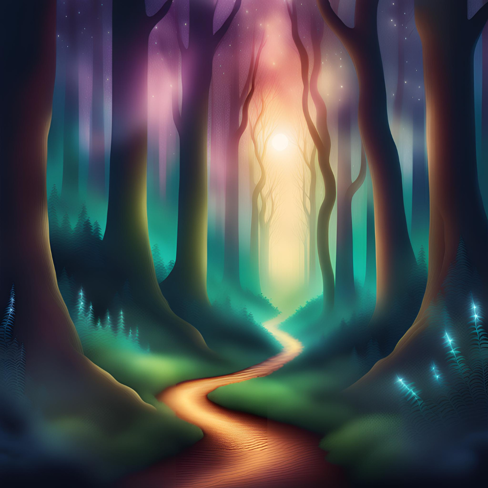

Historia Ryan Marin
Quando decidi seguir a trilha na floresta encantada, não sabia exatamente o que esperava encontrar. Era uma manhã clara e eu estava carregado de esperança, guiado apenas por uma antiga lenda que minha avó costumava me contar. Ela falava de um lugar chamado Paraíso Perdido, um jardim secreto onde o tempo parecia parar e a beleza era tão pura que deslumbrava todos que o encontravam.
A cada passo que dava, a trilha de flores douradas parecia brilhar mais intensamente. As flores exalavam um aroma doce que me encheu de alegria e calma. Após algum tempo, encontrei uma pequena clareira com um arco de flores e uma escada que descia para uma caverna abaixo. Senti uma força misteriosa me chamando para explorar mais.
O caminho das águas cristalinas me levou por entre árvores altas e flores exóticas. O som da água me guiava até uma ponte de pedras que atravessava um rio calmo. Do outro lado, havia uma pequena cabana feita de troncos e folhas. Parecia um lugar de descanso, e eu estava curioso para ver o que mais poderia encontrar
Curioso para descobrir o que havia além do arco, decidi descer pela escada. A caverna estava iluminada por cristais que emitiram uma luz suave. No fundo da caverna, havia uma porta antiga, coberta por runas brilhantes. Abri a porta e entrei em um salão magnífico, com um céu estrelado artificial e uma lagoa central.
Em vez de descer pela escada, decidi explorar a clareira ao redor. No centro, havia uma fonte de água límpida que parecia ter uma luz própria. Me aproximei e percebi que a água refletia imagens de momentos felizes da minha vida. Era como se a fonte estivesse me mostrando o verdadeiro paraíso dentro de mim.
Cabana Decidi entrar na cabana. Dentro, encontrei um velho livro sobre uma mesa de madeira. O livro estava coberto de poeira, mas quando o abri, ele revelou mapas antigos e histórias sobre o Paraíso Perdido. Era como se a cabana tivesse sido um refúgio para alguém que também estava em busca do mesmo lugar. livro sobre a mesa parecia ser um guia, e ao examiná-lo, descobri que continha mapas e descrições Ao entrar na cabana, o cheiro de madeira envelhecida e papel antigo me envolveu. O detalhadas de vários lugares mágicos, incluindo o próprio Jardim de Luz. As anotações marginais pareciam de um explorador que também havia buscado o paraíso.
Seguindo o caminho das águas, o cenário ao redor se tornava cada vez mais deslumbrante. As pedras brilhavam intensamente, e criaturas encantadas espreitavam entre as árvores. A cascata à distância parecia ser a peça final do quebra-cabeça.
Seguindo o caminho das águas, o cenário ao redor se tornava cada vez mais deslumbrante. As pedras brilhavam intensamente, e criaturas encantadas espreitavam entre as árvores. A cascata à distância parecia ser a peça final do quebra-cabeça.
Sentindo-me atraído pela lagoa, decidi mergulhar na água. Assim que entrei, a água era mais do que cristalina; parecia ter uma energia que me envolvia, lavando todas as preocupações e medos. Senti-me em total harmonia com o ambiente. Quando emergi, notei uma pequena ilha no meio da lagoa, com uma árvore antiga e uma caixa dourada ao seu lado
Decidi explorar o salão ao invés de mergulhar. Enquanto caminhava ao redor, encontrei uma parede decorada com gravuras antigas que pareciam contar a história do Jardim. Havia também um pedestal com um livro antigo aberto, cheio de sabedoria sobre o paraíso e sua conexão com os corações dos visitantes.
Decidi sentar-me ao redor da fonte e meditar, absorvendo a tranquilidade do lugar. Durante minha meditação, comecei a perceber que a fonte parecia reagir aos meus pensamentos e sentimentos. Com cada respiração, senti uma conexão mais profunda com o próprio lugar e com minha própria essência.
Enquanto explorava os arredores, percebi um caminho escondido atrás da fonte, coberto por folhagens. Senti uma curiosidade irresistível e decidi seguir esse caminho. Ele me levou a uma pequena cabana de madeira, que parecia ser um lugar de sabedoria e introspecção.
Decidi sentar-me e ler o livro em detalhes. As páginas revelaram não apenas mapas, mas também segredos sobre como alcançar o verdadeiro paraíso interior. Com cada descoberta, senti que estava mais próximo de entender o que realmente significava encontrar o Paraíso Perdido.
Além do livro, decidi explorar o restante da cabana. Encontrei outros objetos e artefatos que contavam a história dos viajantes anteriores e suas jornadas. Cada item parecia ter uma energia própria e me ofereceu novas pistas sobre o que poderia estar escondido além do caminho que eu havia seguido
Você abre a caixa dourada e encontra um pergaminho antigo e um colar encantado. O pergaminho revela uma mensagem sobre como o verdadeiro Paraíso Perdido é encontrado dentro de cada pessoa, enquanto o colar tem um brilho suave e parece se conectar com o seu próprio coração. Usando o colar e refletindo sobre a mensagem, você percebe que o Paraíso Perdido estava sempre dentro de você. A paz e a felicidade que procurava eram uma jornada interna. Com essa nova compreensão, você volta para o mundo exterior, carregando uma sensação de realização e serenidade.
Ao explorar a ilha, você encontra inscrições antigas na árvore que revelam a história do Jardim e o papel dos visitantes no processo de autodescoberta. Essas inscrições ensinam que o verdadeiro Paraíso Perdido é uma jornada pessoal de descoberta e crescimento interior. Com essa sabedoria, você sente uma profunda conexão com o lugar e com sua própria essência. Retorna ao mundo exterior com um novo entendimento de que o Paraíso Perdido está na descoberta e no crescimento pessoal.
Você encontra a chave oculta atrás de uma das gravuras. Usando a chave, abre uma porta secreta que leva a um quarto escondido, onde encontra um mapa detalhado do Paraíso Perdido. O mapa revela que o verdadeiro paraíso é um lugar de harmonia e equilíbrio interior. Com a compreensão desse equilíbrio, você encontra uma sensação de paz e realiza que a verdadeira jornada estava dentro de si. Volta ao mundo exterior com uma nova perspectiva sobre a busca pelo Paraíso Perdido.
Você lê o livro antigo e descobre que o Paraíso Perdido é uma metáfora para a realização pessoal e o entendimento profundo de si mesmo. O livro oferece insights valiosos sobre como encontrar paz interior e harmonia. Ao compreender esses ensinamentos, você sente que encontrou a verdadeira essência do Paraíso Perdido dentro de si mesmo. Sua jornada lhe proporciona uma sensação de realização e tranquilidade.
Seguindo as visões na água da fonte, você encontra uma nova clareira escondida que revela a importância de buscar dentro de si para encontrar o verdadeiro Paraíso Perdido. Esta clareira lhe dá uma sensação de clareza e compreensão sobre como a paz interior e a felicidade são fundamentais para encontrar o paraíso verdadeiro. Com esse novo entendimento, você retorna ao mundo exterior com uma sensação de completude e realização.
Durante sua meditação, você alcança uma compreensão profunda de que o Paraíso Perdido é um estado de serenidade e autoconhecimento interior. A fonte parece refletir suas emoções e pensamentos, ajudando-o a perceber que a verdadeira paz e felicidade vêm de dentro. Você volta ao mundo exterior com uma nova perspectiva sobre a importância do equilíbrio e da autoaceitação.
Dentro da cabana, você encontra manuscritos e artefatos que confirmam que o verdadeiro Paraíso Perdido é um estado de sabedoria e introspecção. Cada item encontrado oferece pistas sobre como alcançar uma paz interior profunda. Com essas novas informações, você sente que encontrou a chave para o verdadeiro paraíso dentro de si. Sua jornada culmina em um sentimento de realização e clareza.
Explorando os arredores da cabana, você descobre outros caminhos e segredos que ajudam a esclarecer a natureza do Paraíso Perdido. Cada descoberta revela a importância de buscar o equilíbrio e a harmonia interior. Essas revelações lhe oferecem uma nova perspectiva sobre a jornada e a compreensão do verdadeiro paraíso. Você retorna ao mundo exterior com uma sensação de paz e compreensão.
Seguindo as instruções do livro e realizando o ritual, você desbloqueia uma nova dimensão de compreensão sobre o Paraíso Perdido. O ritual revela que o verdadeiro paraíso é uma jornada de autodescoberta e conexão com o próprio ser. Com essa nova compreensão, você encontra um estado de paz interior e realização. Sua jornada culmina em um sentimento de completude e serenidade.
As anotações marginais do explorador revelam insights pessoais e experiências que ajudam a entender o verdadeiro significado do Paraíso Perdido. Essas informações confirmam que a busca pelo paraíso é uma jornada interna de autodescoberta e crescimento pessoal. Com essas novas perspectivas, você retorna ao mundo exterior com uma sensação de realização e clareza.
Você investiga os artefatos encontrados e descobre que cada um oferece uma parte da história do Paraíso Perdido. Essas descobertas ajudam a entender que o verdadeiro paraíso é uma jornada pessoal de descoberta e realização. Com essas informações, você encontra um novo sentido de paz interior e equilíbrio. Sua jornada termina com uma sensação de completude e sabedoria.
As anotações sobre os itens encontrados revelam a história dos viajantes anteriores e suas jornadas em busca do Paraíso Perdido. Cada descoberta oferece novas pistas sobre como encontrar a paz e a realização interior. Com essas informações, você sente que compreendeu o verdadeiro significado do paraíso. Sua jornada culmina em um sentimento de realização e entendimento.
As anotações sobre os itens encontrados revelam a história dos viajantes anteriores e suas jornadas em busca do Paraíso Perdido. Cada descoberta oferece novas pistas sobre como encontrar a paz e a realização interior. Com essas informações, você sente que compreendeu o verdadeiro significado do paraíso. Sua jornada culmina em um sentimento de realização e entendimento.
Você entra no túnel e descobre uma câmara secreta cheia de antigos artefatos e inscrições. Esses itens revelam segredos sobre o verdadeiro Paraíso Perdido e como ele está conectado à realização interior. Com essas descobertas, você encontra uma nova perspectiva sobre a paz e a felicidade, retornando ao mundo exterior com uma sensação de completude.
Ao investigar a piscina, você percebe que a água brilhante esconde segredos sobre a natureza do Paraíso Perdido. A energia mágica da piscina revela que o verdadeiro paraíso é uma jornada interna de equilíbrio e paz. Com essa compreensão, você sente uma profunda realização e serenidade, retornando ao mundo exterior com um novo entendimento.
Ao investigar a piscina, você percebe que a água brilhante esconde segredos sobre a natureza do Paraíso Perdido. A energia mágica da piscina revela que o verdadeiro paraíso é uma jornada interna de equilíbrio e paz. Com essa compreensão, você sente uma profunda realização e serenidade, retornando ao mundo exterior com um novo entendimento.